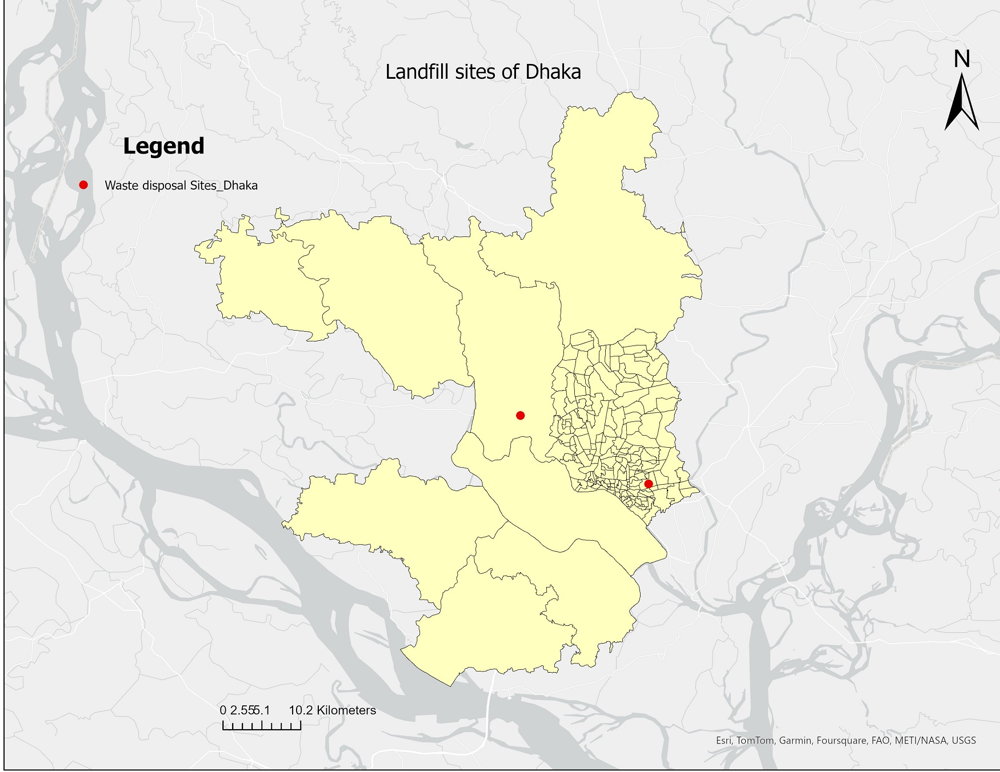

Project Description:
This project focuses on the analysis and visualization of the two major landfill sites in Dhaka City, Bangladesh, emphasizing land cover and population density around these sites.
Data:
- Google Maps.
- ESRI Land Cover: A global land cover dataset.
- Oak Ridge National Laboratory’s LandScan Global Dataset.
Key Highlights:
- 1. Extracted and plotted the coordinates of the landfill sites from Google Maps.

- 2. Analyzed the land cover data to understand the surrounding land use types using the ESRI Land Cover dataset.

- 3. Created a 2 km buffer zone around the landfill sites and calculated the population density within this buffer using the LandScan Global Dataset.